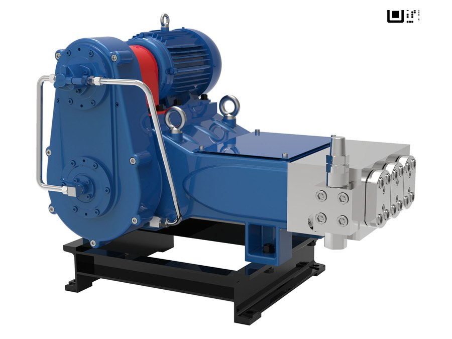
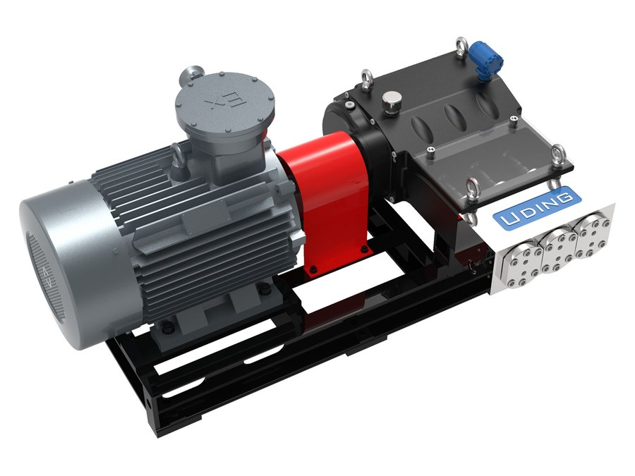
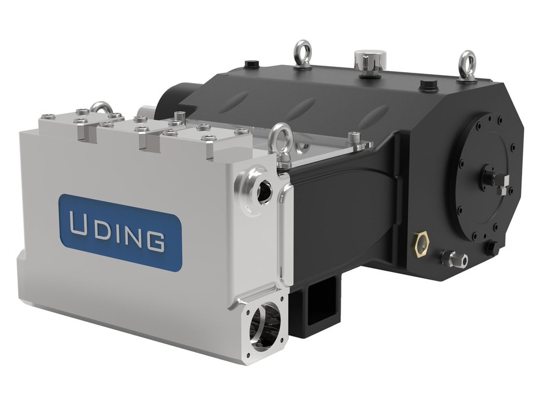
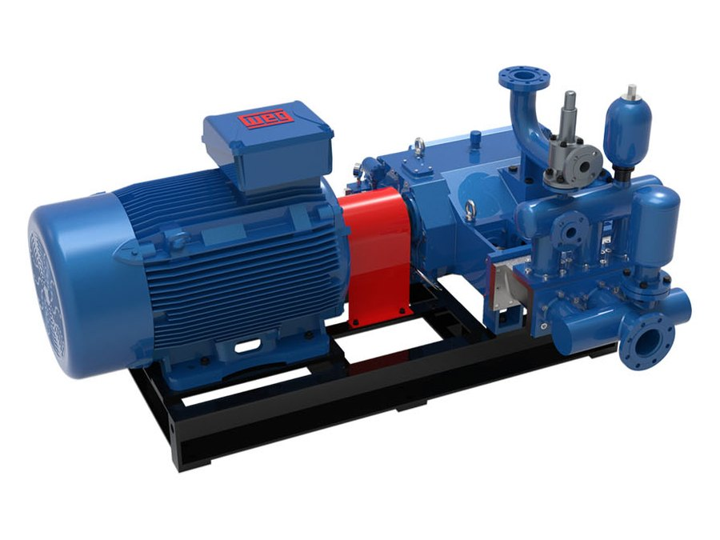
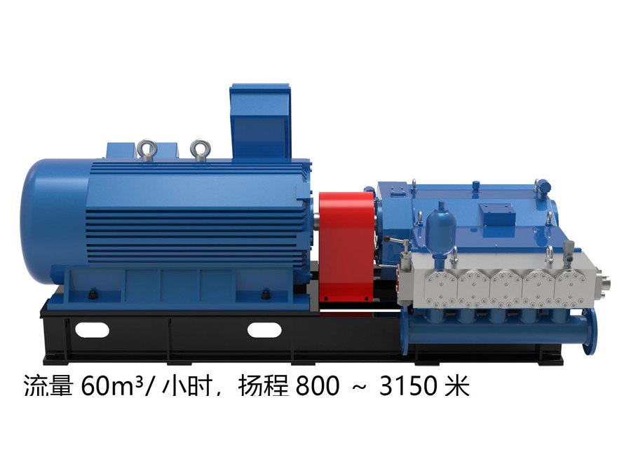
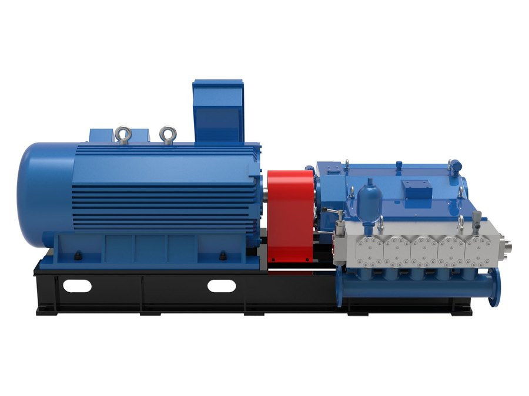
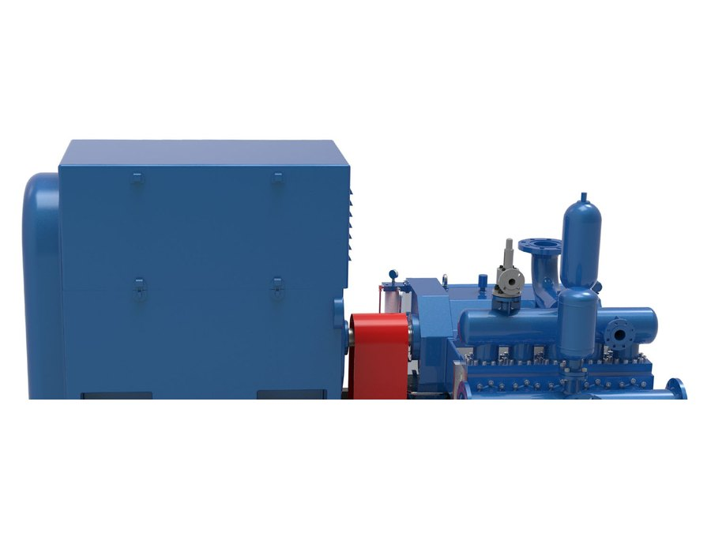
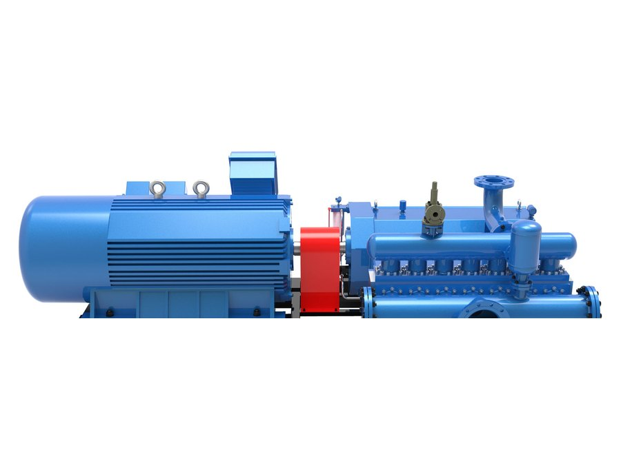
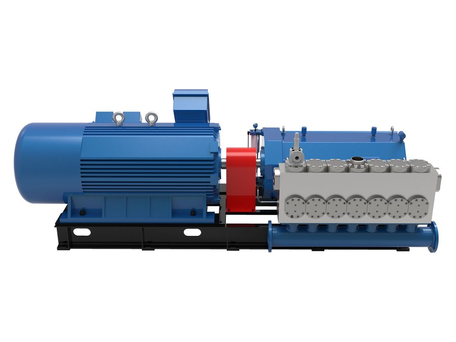

UDQ 12
- 流量
- 12 m³/h
- 扬程
- 200–630 m
- 压力
- 2.0–6.3 MPa
小型锅炉给水、高山供水
UDZ 系列 · 多柱塞往复泵
三柱塞、五柱塞、七柱塞机型，机械曲轴驱动。效率稳定在 90% 以上，易损件 5,000 小时起，外形尺寸可直接替代多级离心泵，泵站无需重新配管。
压力超过 10 MPa 后，多级离心泵是在跟自己的物理规律较劲：每加一级就多一份间隙损失，口环一磨开效率就往下掉。柱塞泵每冲程排出固定容积，容积效率在柱塞整个寿命周期内都保持高位——连续运行通常高于 90%。
直接后果就是电耗。400 m³/h、20 MPa 的工况，62% 与 90% 效率之间差着约 1,100 kW 轴功率，按年运行 8,000 小时算约合 880 万 kWh。
改造不动土建。泵头的吸入口、排出口方位与多级离心泵一致，替换只是管路对接，而不是重建泵房。
国内工业现场多数柱塞泵走液压路线：油站给油缸加压，油缸推动柱塞。这套架构多出液压站、散热、油过滤和另一类故障模式。我们的机组用曲轴、连杆、十字头——油田泵的经典架构，因为那里讲的就是可用率。

随机智能
每台泵都可以配一套边缘智能体：一台装在设备侧的工业计算机，看着这台泵、把看到的东西讲清楚，并把工况点按在效率真正最高的位置上。
状态
振动、压力、功率折算成一个健康度指数，配一句人话结论：哪个指标在漂、漂得多快、在停机之前该做什么。
能效
智能体按调试基线跟踪比功率。当磨损、结垢或工况变化把节电量吃掉时，它会说出来——而不是让节能量无声消失。
自主
推理在 RK3576 级边缘模块上本地完成：不用云账号、数据不出厂区，井下或偏远泵房没有网络也能跑。
多数监测系统止步于一条趋势线，判断"这条线是磨损、汽蚀、阀门关了还是工况变了"仍要靠人。智能体带着泵的机理模型和调试数据，能把症状归到原因，并说成班组能执行的话。
因为用的是机理模型而不是黑箱，工况点一变它照样有效——这正是纯回归模型失效的场景。
不发出跳闸或启泵指令。保护归现场安全系统和人，智能体只做提醒、记录和升级上报。这条边界是刻意的——也正因如此，它才能进得了正在生产的厂区。
边缘模块与传感器可随泵一起报价、可对既有泵站改造加装，也可按多台设备打包。该系统目前在我们自有设备上试点运行，客户项目按项目单独报价。
型谱
流量由柱塞直径与转速决定，扬程由级数与压力等级决定。先按最接近的规格初选，再用计算器核对。

小型锅炉给水、高山供水

锅炉给水、除鳞

锅炉给水、流程输送

锅炉给水、供水

系列内扬程最高
锅炉给水、矿井排水

锅炉给水、矿井排水

矿井排水、供水

矿井排水

矿井排水、灰渣输送

大型矿井排水

最大单机——替换 500 m³/h 离心泵

600 m³/h 高扬程，功率至 2,240 kW
转速 180–310 rpm，容积效率 ≥97%，总效率 ≥90%。扬程（m）÷100 即为对应的压力（MPa）。注水系列 UDZ 30/50/100/160/320 …/16 覆盖 7–320 m³/h、16–70 MPa——该系列样本请另行索取。
多数情况可以。泵头的吸入口、排出口方位一致，底座与管路只需小幅改动即可对接。确认前我们会要一份管路草图和你现在的工况点。
柱塞、阀座、密封属耗材，周期从 5,000 小时起。曲轴、十字头与机架按 30,000 小时大修设计。易损件更换全部在现场完成。
供。可以只供泵、泵加电机，或整撬供货（含变频、仪表与控制）。
UDZ 系列按中国往复式容积泵国家标准制造。材质证明、试验报告以及项目所需的第三方检验在订货阶段约定——每个市场什么有证、什么没有，我们都会写清楚。